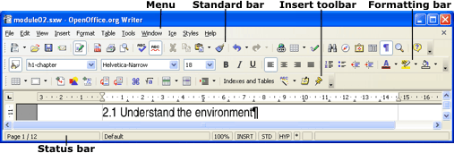

|
|
|
Module 2 – Word processing with OpenOffice.org (OOo) Writer
In this module you will learn how to use OpenOffice.org (OOo) Writer to write your content for the Integrated Content Environment (ICE) system.
Note |
|
|
If an OpenOffice.org – Security Warning dialog box displays, click the Enable Macros button. |
Templates define the layout and styles in a document. You can use a template over and over again to create documents with a consistent design.
When OpenOffice.org is installed on your computer, a template called ‘ice-template.ott’ will be assigned as the default. Each time you create a new text document, it will be based on the template. Use the following process if you don’t have the correct default assigned.
From the Menu, select File...Templates...Organize. The Template Management window displays.
From the left hand pane, open the My Templates folder then click the template name to select it.
Click the Commands button to display the options.
Select Set As Default Template, then click the Close button.
Documents based on a template created using the process of File...Templates...Save, will retain an association with the template. If a template saved in this way is altered, associated documents will display a message when opened to indicate that styles do not match the template. You can choose to update the styles from the template. Templates created in this process may also be known as ‘sticky’.
Documents based on a template created using the process of File...Save As...Document Template, will not retain an association with the template.
It is possible to check if a document is associated with a template.
From the Menu, select File...Properties...General tab.
At the bottom of the dialog box there is a Template section. If the document is associated with a template, the template name will be displayed.
If you have used other word processing software (e.g. Microsoft Word), you will see similarities in OOo Writer. Your toolbar configuration may be different to the screen grab below.

From the Menu, select View...Toolbars. Active toolbars will display a tick beside the name.
Menus supply access to functionality related to what you are doing in your document. Unrelated items will not be accessible in the menu.
Toolbars display icons and textboxes which offer a fast way to choose some operations without using the menus. To display tips, rest your mouse over a toolbar icon. When using some of OOo Writer’s functions (e.g. working in a table), a floating toolbar relevant to that function may display.
The Status bar displays information relating to the document (e.g. page count at the bottom left) and special functions.
When you create a new text document, it is based on the Default template. The ICE template should be assigned as your default.
From the Menu, select File...New...Text Document.
If the Security Warning dialog displays, click the Enable Macros button.
From the Menu, select File...Save As.
Select the Save in path...Name the file...Save as type...Select OpenDocument Text (.odt)...Click the Save button.
From the Menu, select File...Properties...Description tab.
In the Title textbox, type in the document Title. This will automatically be included in the right-hand header using a field (e.g. Module 1 – Installation and setup).
In the Subject textbox, type in the Subject. This will automatically be included in the left-hand header using a field (e.g. FET8611 – Emerging environments for learning).
Click the OK button.
From the Menu, select File...Save.
Note |
|
Right click the Quickstarter...Select the From Template option...From the left menu, click Templates...In the Title section, click ‘ice-template’ then click the Open button. |
Some existing documents will be part of the sample course provided to assist you with maintaining consistent directory and content structure.
From the Menu, select File...Open.
If the Security Warning dialog displays, click the Enable Macros button.
Locate the file then click the Open button.
If you have previously set up the properties, you may not need to perform Steps 3–6.
If starting with the sample course structure, you will need to perform Steps 3–6 as the correct information for your files will not be included yet.
From the Menu, select File...Properties...Description tab.
In the Title textbox, type in the document Title. This will automatically be included in the right-hand header using a field (e.g. Module 1 – Installation and setup).
In the Subject textbox, type in the Subject. This will automatically be included in the left-hand header using a field (e.g. FET8611 – Emerging environments for learning).
Click the OK button.
Make edits as required.
From the Menu, select File...Save.
There are instances when keeping track of changes made in a document can be beneficial. For example, when several colleagues are reviewing and editing a document.
Not all changes are recorded when using the Changes function. For example, changes to tabs or formulas.
If you wish to track the changes made in a document, the Changes function needs to be activated prior to editing.
From the Menu, select Edit...Changes...Record.
Editorial changes made to a document with Changes activated can be accepted or rejected. You can choose to accept or reject changes individually or all at once.
From the Menu, select Edit...Changes...Accept or Reject.
Spellcheck allows you to check a document for errors. It is possible to add words, abbreviations etc. to the dictionary to avoid repetition of suspected errors. The Thesaurus can also be accessed from within Spellcheck.
From the Menu, select Tools...Spellcheck or use the Spellcheck icon on the Standard toolbar.
When AutoSpellcheck is activated, it checks the document for errors as you type. Suspected errors are indicated by a red wavy underline. The red underline does not print.
To activate AutoSpellcheck, click the AutoSpellcheck icon on the Standard toolbar. The icon displays a blue border when activated.
Many formatting specifications can be defined and called a style. When you use styles to format a document, it ensures consistency and saves time. The styles will stay with the document.
When a document is formatted manually (not using styles), remembering previously used formatting properties and keeping consistency is nearly impossible.
Some of the benefits of using templates with styles include:
removal of repetitive tasks, like formatting headings individually
consistent appearance for documents
assistance with product quality.
A custom Styles menu is included with the ICE template. We recommend that you use the Styles menu to apply the ICE paragraph and character styles.
Do not apply character styles (e.g. B and I) from the toolbar icons. There are character styles included in the Styles menu.
Do not apply paragraph alignment (e.g. align right or centered) from the toolbar icons. There are paragraph styles included in the Styles menu.
If you prefer not to use the mouse to access the Styles menu, it is possible to use the keyboard. The following is an example for using the keyboard to apply the ‘p’ style to a paragraph.
<Alt> + <S>...<P>...<P>
A document without numbered headings (e.g. introduction, assessment)
Title, h1, h2, h3
A document that includes numbered headings (e.g. modules)
Title-chapter, h1 (only if numbering is not required e.g. learning outcomes heading), h1-chapter, h2-chapter, h3-chapter
The Styles and Formatting window can be used for easy access to apply, create, edit, add and remove formatting styles. The style categories of Paragraph, Character, Frame, Page and List styles are available from icons at the top of the window.
From the Menu, select Format...Styles and Formatting or press <F11> on the keyboard.
Note |
|
|
We do not recommend using this tool until you are very familiar with the ICE styles. You will then be able to determine the OOo Writer default styles to ignore in the list. |
If you do use the Styles and Formatting window, select Custom Styles from the drop down list at the bottom of the window. This should help eliminate most unwanted styles from displaying.
Use the Default Formatting option when you want to remove extra formatting that has been attached to a style. For example, when bold, italic or a link has been added to a style.
Select the text.
Right click on the selection then select Default Formatting (or from the Menu, select Format...Default Formatting.).
Tables are commonly used to display data, but can also play an important part in controlling page layout. Using Tabs to control layout is not recommended.
From the Menu, select Table...Insert...Table.
The Insert Table dialog box lets you specify a Name (assigning a name makes it easy to identify specific tables when listed in the Navigator), Size (specify the amount of columns and rows) and Options (relating to header, splitting and borders).
We recommend that you remove the default styles used by OOo Writer in tables.
|
OOo Writer default style |
Change to |
|
Table Heading |
p-center then add i-b |
|
Table Contents |
p |
After a table has been inserted into a document, it is easy to change how it displays by changing the properties.
Right click inside a table then select Table.
Tabs give you access to the properties related to that table. For example, the Table tab lets you specify the alignment.
Each table starts with the same number of columns per row. It is possible to change the layout of a table by merging cells.
Highlight the required cells. Right click in the selection then select Cell...Merge.
If you change your mind about the layout you created with the merged cells, it is possible to split the cells.
Right click inside the merged cells then select Cell...Split. Specify the number of cells and the direction.
Note |
|
|
Be aware that merging and splitting cells can become very confusing. Think carefully about your layout requirements before attempting this. |
Note |
|
|
ICE can not handle transparent images at this point. The development team are working on this. |
When you create pictures in other programs (e.g. Corel, Paint Shop Pro) to use in OpenOffice.org (OOo) Writer, save or export to PNG, GIF or JPG.
When you have a separate file for a picture, place it in the ‘images’ folder which is located inside the ‘media’ directory for your ICE course.
From the Menu, select Insert...Picture...From File.
Locate the file, ensure the Link option is not selected then click the Open button.
Modify the picture properties as required. For example, add alternate text and select anchor type (e.g. As character).
Properties can be modified after a picture has been inserted into a document.
Right click on the picture then select Picture. The Picture dialog box displays with a variety of tabs to select the required options.
Note |
|
|
We recommend that all pictures inserted into your OOo Writer documents have a Name inserted (use the picture options) to conform to Web Content Accessibility Guidelines. (If you are familiar with mark up languages, OOo uses the Name option in the same manner as Alternate Text.) This means that a text description of the image is available if a person does not display images in their browser or a screen reader is used.
|
An inline picture is one that appears in the flow of text. The following options are recommended when inserting an inline picture.
After inserting a picture, right click on it then select Picture.
Select the Type tab.
From the Anchor section, select the As character option then click the OK button.
While the picture is highlighted, from the Menu, select Edit...Cut.
Place your cursor in the paragraph location.
From the Menu, select Edit...Paste. Use the <Alt> + Arrow keys to manipulate position.
Right click on the picture then select Picture.
From the Options tab, locate the Names section and insert a concise meaningful description in the Name text box.
If you have drawn a diagram in Microsoft Word using its drawing tools, it is possible using the following process to include the diagram in your Writer document.
Save the Word file containing the drawing into the ‘src’ folder which is located inside your course media/images directory. The source file can be accessed when changes are required.
Ensure that all of the drawing components are grouped to make one item.
With OpenOffice.org Writer open, from the Menu, select File...Open.
Locate the Word file then click the Open button.
Select the grouped drawing then from the Menu, select Edit...Copy.
In your working file, place the cursor where the image is to be inserted.
From the Menu, select Edit...Paste Special. Using the Paste option will not give optimum results.
In the Selection section, click Bitmap then click the OK button.
Right click on the picture then select Picture.
From the Options tab, locate the Names section and insert a concise meaningful description in the Name text box.
The ICE system requires pictures to be embedded and not linked to an external file. Even though you will not link to the external file, it is a good idea to keep the file in case manipulation is required. For example, it might be possible to brighten a dark photograph if you have the file.
Right click on the picture then select Picture.
From the Picture tab, look at the Link section. A path will be included in the File name text box if the picture is linked.
From the Menu, select Edit...Links. (The Links option will only be visible if there are linked pictures in the document.) The Edit Links dialog box displays.
Select the required file/s then click the Break Link button.
When asked to confirm the action, select Yes.
Click the Close button.
We will discuss three list types: bulleted list, numbered list and definition list.
Note |
|
For example, from the Styles menu, select List Item - li...Level 1 - li1...Paragraph 1 - li1p. |
The following process will assist you to create a bulleted list similar to the example.
Level 1 item
Level 2 item
Place your cursor in a blank paragraph or existing text.
From the Styles menu, select List Item - li...Level 1 - li1...Bullet 1 - li1b. This will make a level 1 bulleted item.
If the style has been applied but you do not see a bullet on your list, click the Bullets On/Off icon on the Formatting bar. With your cursor inside the bulleted style, you should be able to see the correct style listed in the Applied Style list at the left of the Formatting bar.
Type your text if you have not already done so.
To add another level 1 bulleted item, place your cursor at the end of the list item then press the <Enter> key on the keyboard.
To change the list item from level 1 to level 2 (if required), from the Styles menu, select List Item - li...Level 2 - li2...Bullet 2 - li2b.
If the list item does not appear at the correct level, click the Bullets On/Off icon on the Formatting bar twice.
You may also need to use the Bullets On/Off function for a following style when your list is finished.
The following process will assist you to create a numbered list similar to the example.
Level 1 item
Level 2 item
Place your cursor in a blank paragraph or existing text.
From the Styles menu, select List Item - li...Level 1 - li1...Numbered 1 - li1n. This will make a level 1 numbered item.
If the style has been applied but you do not see a number on your list, click the Numbering On/Off icon on the Formatting bar. With your cursor inside the numbered style, you should be able to see the correct style listed in the Applied Style list at the left of the Formatting bar.
Type your text if you have not already done so.
To add another level 1 numbered item, place your cursor at the end of the list item then press the <Enter> key on the keyboard.
To change the list item from level 1 to level 2 and use alphabet (if required), from the Styles menu, select List Item - li...Level 2 - li2...Lowercase Alpha 2 - li2a.
If the list item does not appear at the correct level, click the Numbering On/Off icon on the Formatting bar twice.
You may also need to use the Numbering On/Off function for a following style when your list is finished.
Note |
|
|
A definition list item consists of a term (dt) and description (dd).
Term
Description of the term.
Place your cursor in a blank paragraph or existing text.
From the Styles menu, select List Item - li...Level 1 - li1...Definition Term 1 - dt1.
Type your text if you have not already done so.
To add the description, place your cursor at the end of the term then press the <Enter> key on the keyboard.
Type your description.
Hyperlinks take you to information within the same document or to other files.
From the Menu, select Insert...Hyperlink.
If the option for URL recognition is activated, a URL will be automatically linked after you type it with a concluding space or return.
From the Menu, select Tools...AutoCorrect...Options tab.
Use a URL to link to a file or server on the Internet. Example format is:
.... at USQ <http://www.usq.edu.au>....
The following process is for linking text to a URL.
Select the text to be linked.
From the Menu, select Insert...Hyperlink. The Hyperlink dialog box displays.
From the left frame, select Internet.
From the Hyperlink type section, select the required option (e.g. Web).
In the Target textbox, insert the URL.
From the Further settings section, make a selection from the Frame drop down list if required.
Click the Apply button then click the Close button.
Note |
|
|
It is not necessary to close the Hyperlink dialog box every time you insert a link. As long as you click the Apply button after inserting each link, the dialog box can stay open until you are finished. |
In the Hyperlink dialog, a frame can be assigned to a hyperlink to specify where it will open. Make a selection from the drop down list or type the frame name if you are using framesets. If a frame is not specified, the file/URL opens in the current browser window.
A named frame – Loads in the named frame in the site.
_blank – Loads the file/URL in a new browser window. This is often useful when the link is external to your site.
_parent – Loads in the parent frame when working with framesets.
_self – Loads in the current frame or window.
_top – Loads in the current window and useful for breaking out of a frameset.
You can link between files in your content structure. The ICE system requires you to include the absolute URL of a document within the ICE structure. When content is exported, the system automatically converts links from absolute to relative.
Open the ICE site for your content in a browser.
Locate the file you want to make a link to.
From the Address text box in your browser, select then copy the URL.
Open the document that you want to link from.
Select the text to be linked.
From the Menu, select Insert...Hyperlink. The Hyperlink dialog box displays.
From the left frame, select Internet.
From the Hyperlink type section, select the required option (e.g. Web).
In the Target textbox, paste the URL you copied.
Click the Apply button then click the Close button.
You can link from one area to another in the same document. The first step is to create a bookmark at the target location.
Place the cursor at the target location.
From the Menu, select Insert...Bookmark. The Insert Bookmarks dialog box displays.
Type the bookmark name. Keep it brief and relevant.
Click the OK button.
A hyperlink can now be created to point to the bookmark.
Select the text to be linked.
From the Menu, select Insert...Hyperlink. The Hyperlink dialog box displays.
From the left frame, select Document.
From the Target in document section, click the Target in Document icon. The Target in Document dialog box displays.
Click the plus sign next to Bookmarks to display the list of created bookmarks.
Select the required bookmark name then click the Apply button. Click the Close button in the Target in Document dialog box.
In the Hyperlink dialog box, click the Apply button then click the Close button.
When you edit the displayed text of a hyperlink, it does not alter the associated URL. The best option is to use the Hyperlink Dialog to alter the displayed text or URL.
Select the text. It is important to click and drag from left to right when selecting the text.
From the Menu, select Edit...Hyperlink. The Hyperlink dialog box displays.
Modify the Target and/or Text as required.
Click the Apply button then click the Close button.
You may want the displayed text to remain in the document, but remove the associated hyperlink.
Select the text.
Right click on the selection then select Default Formatting. (Or from the Menu, select Format...Default Formatting.)
There are two main methods that can be used to link to media files such as Flash, audio and video. One is to directly link to the media file and the second is a slightly different method which will embed the media file in the HTML.
If you link directly to the media object in your content structure (see section 2.10.4), navigation will be lost unless you set the target to _blank (see section 2.10.3).
Text: Flash link
URL: http://localhost:8000/packages/ice-guide/media/flash/flash.swf
Target: _blank
Flash Link [new window]
To embed media in the HTML, link directly to the media file with the parameters of embed, width and height on the end of the URL. Either text or an image can be linked to display as the object in the HTML.
Linking an image to an object using this method allows you have have a print version of the media file in the document and have the media object appear in the HTML.
For example, you can’t print a video file but you can insert an image that represents the video with a link to the video. The HTML will contain the video and the document will contain the image for printing.
Link an image or text with the URL for the required object in your content structure (see section 2.10.4) (e.g. http://localhost:8000/packages/ice-guide/media/flash/flash.swf).
The parameters of embed, width and height need to be added to the end of the URL. Use the Hyperlink dialog box to add the parameters to the URL. For example, at the end of the URL include ?embed&width300&height=120. The full URL becomes:
http://localhost:8000/packages/ice-guide/media/flash/flash.swf?embed&width=300&height=120
The following example is an image linked to a Flash file. Note the height and width parameters are used to set the size of the object. If the parameters are not included, it will default to width 320 and height 240.
AutoText entries are predefined text, tables etc. that can be inserted into a document. They are helpful to maintain consistency and are quick to insert.
The ICE default template contains empty and example AutoText entries for activities and notes.
Place your cursor in the required location in your document.
From the Menu, select Edit...AutoText.
If the Security Warning dialog displays, click the Enable Macros button.
If necessary, click the plus sign next to the category to expand the entries.
Click on the required entry then click the Insert button.
Insert information in the cell below the heading in the right hand column. Number the activity headings sequentially by module and type. For example, discussion and learning activities in module 1 would be numbered: Discussion 1.1, Discussion 1.2 etc. and Learning activity 1.1, Learning activity 1.2 etc.
We do not recommend copying from Word and pasting directly into OOo Writer. Opening the Word document within OOo Writer before copying gives a much better translation.
Open OOo Writer.
From the Menu, select File...Open...Locate the Word file then click the Open button.
Select the required content then from the Menu, select Edit...Copy.
From the Menu, select File...New. This should open a new document based on the ICE template which should have been set as your default.
Or, from the Menu, select File...Open. Locate the file then click the Open button. This will open an existing document.
With you cursor in the required location of your document, from the Menu, select Edit...Paste.
From the Menu, select File...Save As if this is a new document and follow the next few steps.
If pasting into an existing document, you may only need to go to Step 12 to save.
Select the Save in path...Name the file...Save as type...Select OpenDocument Text (.odt)...Click the Save button.
From the Menu, select File...Properties...Description tab.
In the Title textbox, type in the document Title. This will automatically be included in the right-hand header using a field (e.g. Module 1 – Installation and setup).
In the Subject textbox, type in the Subject. This will automatically be included in the left-hand header using a field (e.g. FET8611 – Emerging environments for learning).
Click the OK button.
From the Menu, select File...Save.
It is possible to insert an equation created in MathType into your OpenOffice.org Writer document when you have MathType installed.
If you copy an equation from MathType then paste into a Writer document, the equation is inserted as an image. To insert an equation that can be edited using MathType, follow the instructions below.
Note |
|
|
MathType equations do not convert through ICE correctly at this point. ICE does not accept transparent images. This is on the development list. |
Place your cursor in the required location in your document.
From the Menu, select Insert...Object...OLE Object. An Insert OLE Object dialog box displays.
Select the Create New option.
From the Object type section, select Further Objects then click the OK button. The Insert Object dialog box displays.
Select the Create New option.
From the Object Type section, select MathType Equation then click the OK button. MathType opens.
Create the equation then from the MathType Menu, select File...Exit.
Click the Yes button to save the equation in the document. The equation object will be displayed in your Writer document.
With MathType installed, it is possible to easily edit an equation that is inserted in a Writer document.
Double click on the equation in your Writer document. MathType will open.
Make the edits then from the MathType Menu, select File...Exit.
Click the Yes button to save the equation edits in the document.
An inline equation is one that appears in the flow of text. The following options are recommended when inserting an inline equation.
After inserting an equation, right click on it then select Object.
Select the Type tab.
From the Anchor section, select the As character option then click the OK button.
While the equation is highlighted, from the Menu, select Edit...Cut.
Place your cursor in the paragraph location.
From the Menu, select Edit...Paste. Use the <Alt> + Arrow keys to manipulate position.
A master document is a container to hold documents that need to be combined in order to create a book. The individual files used to build the master document are called subdocuments. The content of subdocuments cannot be edited directly within the master document but you can use the Navigator to access subdocuments for editing. When edits are made to a subdocument, they are not automatically reflected in the master document. An update is needed.
Use the Navigator to manage subdocuments of a master document. The Navigator has a row of icons at the top for a variety of functions.
Subdocument headers and footers are ignored by a master document. Headers and footers need to be set up in a Master document.
The following instructions are for the use of a sample master document that has been created as a template framework.
A master document will be copied from the sample course area.
With OpenOffice.org Writer open, from the Menu, select File...Open.
For the initial setup, when asked to update links, click the No button.
If Yes is selected, the link path to the subdocuments will go to the original path the document was copied from instead of where you are copying to.
After the master document has been set up specifically for a course, select Yes when asked to update links.
If the Security Warning dialog displays, click the Enable Macros button.
Ensure the Navigator is open. To open the Navigator, from the Menu, select Edit...Navigator.
At this point, the master document is displaying the contents of the sample course it was copied from. This will be updated in the following steps.
Set up the required subdocuments for your course. You may need to link, add, remove or reorder through the Navigator.
Edit link – To view the link path for a subdocument, hover your cursor over a file name in the Navigator. If a subdocument link path needs to be modified, right click on the file name then select Edit Link. The Edit Sections dialog displays. Select a file name then click the button to change the path. Click the OK button.
Add – Click and hold down the Insert icon then select File. Locate the path of the file/s. Select the file/s then click the Insert button. The inserted subdocuments will display in the Navigator.
Reorder – Click a subdocument to select it, then use the Move Up and Move Down icons until the correct position is located.
Delete – Right click on a subdocument then select Delete. The deletion only removes the subdocument from the master document.
Update – With the subdocuments included, the master document needs to be updated so it is reading the correct contents of each subdocument.
Click and hold down the Update icon then select All. When asked to ‘Update all links?’, click the Yes button.
Update All updates all of the contents in the master document, including the table of contents. Update Links updates the links to the subdocuments but does not update the table of contents.
Insert text – You can not write content directly into a master document unless you insert a text place holder. This is how the cover, copyright and table of contents have been set up in the sample master document.
Click and hold down the Insert icon then select Text. Move the order if needed using the Move Up and Move Down icons.
Edit the file properties of the master document. The Title and Subject properties must be included. Header fields reflect these properties.
From the Menu, select File...Properties. The Properties dialog box will display. Select the Description tab. Insert the course code and name in both the Title and Description text boxes (e.g. CIS3002 – Advanced systems analysis and design). Click the OK button.
In the master document, ensure that the Writer default character style called ‘Internet Link’ has underlining removed. Underlining of links is not used for print documents.
From the Menu, select Format...Styles and Formatting. Click the Character Styles icon at the top of the window. Right click on the Internet Link style then select Modify. Select the Font Effects tab. From the Underlining drop down list, select (Without).
Work through the master document from beginning to end to ensure the text and subdocuments are structured correctly. For example, is there a subdocument that must start on a new page.
Cover – (Using First Page as the Page Style which has no header.) Edit the course code, course name, faculty, department, semester and year as required.
Copyright – (Using Copyright Page as the Page Style which has no header.) Edit the year and semester. This page will print directly behind the cover page.
Table of contents – (Using TOC Page as the Page Style which has no header.) You may need to update the automatically generated table of contents.
Right click inside the gray region then select Update Index/Table. Ensure the table of contents starts on a right hand page and ends on a left hand page. You may need to insert a blank page.
Main content – (Using Default as the Page Style which uses a header.) Check that the content is flowing correctly in the master document.
You may need to force some content to start on a new page. If so, open the subdocument. Right click on the paragraph then select Paragraph from the list. Select the Text Flow tab. In the Breaks section, click the checkbox next to Insert. For the Type, select Page. For the Position, select Before. Click the OK button. From the Menu, select File...Save.
In the Navigator, click and hold down the Update icon then select All. This will update the master document to display the changes you did.